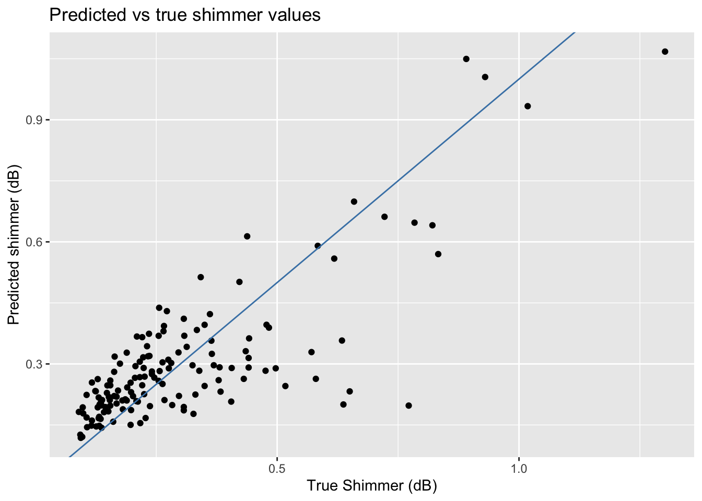

library(tidyverse)
library(tidymodels)Prediction
STA 199
Bulletin
- this
aeis due for grade. Push your completed ae to GitHub within 48 hours to receive credit - final project proposal due today at 5:00pm
- statistics experience homework released
- today is last day to register for datafest.
Getting started
Clone your ae17-username repo from the GitHub organization.
Today
By the end of today you will…
- be able to make new predictions from your fitted linear models
- visualize the fit of your model
Load packages and data
Notes
Prediction
predict() is a powerful function that takes two arguments:
- your model fit
- new data you want to make predictions from
There are several ways you can use the predict() function.
For standard linear regression,
predict(model_fit, test_data) # returns predicted outcomeFor logistic regression you can use the code above to obtain the predicted outcome (0 or 1) or alternatively use one of the formulations below to quickly grab the log-odds or the probability of the outcome “1”.
predict(model_fit$fit, test_data) # returns log-oddspredict(model_fit, test_data, type = "prob") # returns probability of a 1.Practice
Load data:
parkinsons_train = read_csv("https://sta101-fa22.netlify.app/static/appex/data/parkinsons_train.csv")
parkinsons_test = read_csv("https://sta101-fa22.netlify.app/static/appex/data/parkinsons_test.csv")This dataset comes from Little et al. (2008). The data includes various measurements of dysphonia (disorders of the voice) from 32 people, 24 with Parkinson’s disease (PD). Multiple measurements were taken per individual. The measurements we examine in this subset of the data include:
name: patient IDjitter: a measure of relative variation in fundamental frequencyshimmer: a measure of variation in amplitude (dB)PPE: pitch period entropyHNR: a ratio of total components vs. noise in the voice recordingstatus: health status (1 for PD, 0 for healthy)
Exercise 1
Write down a main effects model to predict Parkinson’s status from HNR, shimmer, jitter and PPE.
Exercise 2
Fit your model from the previous exercise using the parkinsons_train data set.
# code hereExercise 3
Use your model to predict PD status in the parkinsons_test data set with a decision boundary of p = 0.5. How many false positives do you observe? How many false negatives?
Next change the decision boundary to 0.25. How many false positives and false negatives do you observe?
Which decision boundary do you prefer?
# code hereVisualizing model fits
There are many ways you can visualize a fitted model. Plotting the hyperplane is limited to simple two-variable (predictor, outcome) and three-variable (predictor, predictor, outcome) plots. Here we explore some useful visualizations for high-dimensional multivariate models.
Example: logistic regression
- Create a stacked bar plot with
statuson the x-axis and fill by whether or not the predicted status is correct or incorrect.
# code hereExample: ordinary least squares regression:
Scenario: we are trying to predict vocal amplitude variation (shimmer) from jitter and pitch period entropy (PPE).
\[ y = \beta_0 + \beta_1 x_1 + \beta_2 x_2 + \epsilon \]
where
\(y\): shimmer \(x_1\): jitter \(x_2\): PPE
myPredictiveModel = linear_reg() %>%
set_engine("lm") %>%
fit(shimmer ~ jitter + PPE, data = parkinsons_train)Even if we don’t have a test data set, we could still create a new column of predictions like before:
# predict based on new data
predict_train = parkinsons_train %>%
mutate(myPrediction = predict(myPredictiveModel, parkinsons_train)$.pred)From here we can plot \(\hat{y}\) vs \(y\):
predict_train %>%
ggplot(aes(x = shimmer, y = myPrediction)) +
geom_point() +
labs(x = "True Shimmer (dB)", y = "Predicted shimmer (dB)", title = "Predicted vs true shimmer values") +
geom_abline(slope = 1, intercept = 0, color = "steelblue")
Alternatively, we could create a residual plot. Residual plots can be used to assess whether a linear model is appropriate.
A common assumption of linear regression models is that the error term, \(\epsilon\), has constant variance everywhere.
If the linear model is appropriate, a residual plot should show this.
Patterned or nonconstant residual spread may sometimes be indicative a model is missing predictors or missing interactions.
Exercise 4
Create a new column residuals in predict_train and save your data frame as predict_train_2
# code herepredict_train_2 %>%
ggplot(aes(x = myPrediction, y = residuals)) +
geom_point() +
geom_hline(yintercept = 0) +
labs(x = "Predicted shimmer (dB)", y = "Residual")